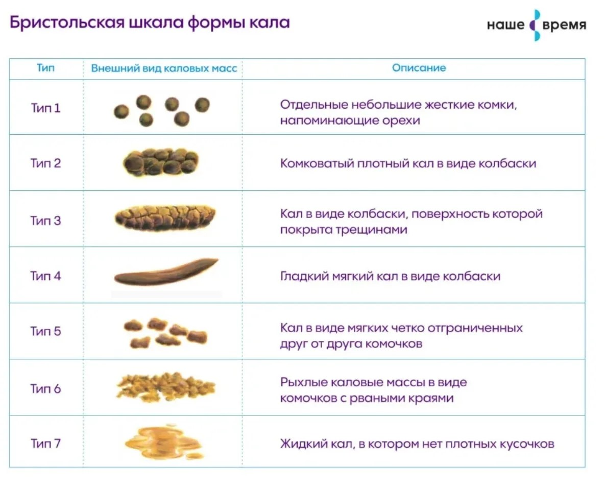

Почему это важно говорить вслух
Тема деликатная, но именно поэтому о ней молчат там, где нужно говорить. По статистике, более 60% людей хотя бы раз в жизни сталкивались с нарушениями пищеварения — запорами, диареей, вздутием, дискомфортом. Многие годами живут с этим, считая «нормой», и лишь единицы доходят до специалиста.
Между тем, кишечник — это второй мозг организма. В нём находится около 70% иммунных клеток, вырабатывается большая часть серотонина («гормона хорошего настроения»), и от его состояния напрямую зависят энергия, кожа, вес и даже эмоциональный фон.
Один из самых простых и информативных способов оценить состояние пищеварения — это Бристольская шкала формы кала. Она разработана в 1997 году в Бристольском университете (Великобритания) и с тех пор используется врачами-гастроэнтерологами по всему миру как стандартный диагностический инструмент.
Что такое Бристольская шкала
Бристольская шкала — это медицинская классификация, которая делит стул на 7 типов в зависимости от формы и консистенции. Каждый тип отражает, сколько времени каловые массы находились в кишечнике: чем дольше — тем плотнее и суше стул, чем быстрее — тем жиже.
Шкала помогает:
- Оценить скорость транзита содержимого по кишечнику
- Заподозрить проблемы до того, как они станут серьёзными
- Отслеживать динамику при изменении питания, приёме добавок или лечении
- Грамотно описать симптомы врачу — не «у меня что-то не так», а конкретно: «у меня стул типа 2 уже две недели»

Бристольская шкала формы кала — международный стандарт оценки пищеварения
7 типов Бристольской шкалы: подробный разбор
Тип 1 — Отдельные небольшие жёсткие комки, напоминающие орехи
Что это значит: выраженный запор. Каловые массы слишком долго находились в толстом кишечнике, вода из них всосалась практически полностью.
Возможные причины:
- Недостаток воды в рационе
- Дефицит клетчатки
- Малоподвижный образ жизни
- Приём некоторых лекарств (железо, опиоиды, антидепрессанты)
- Синдром раздражённого кишечника (СРК) с преобладанием запоров
- Дисфункция щитовидной железы (гипотиреоз)
- Дефицит магния
Тип 2 — Комковатый плотный кал в виде колбаски
Что это значит: склонность к запорам, транзит замедлен, но не критично.
Возможные причины: те же, что и для типа 1, но в менее выраженной форме. Часто встречается при нерегулярном питании и недостатке жидкости.
Тип 3 — Кал в виде колбаски, поверхность которой покрыта трещинами
Что это значит: вариант нормы, близкий к идеальному. Стул оформлен, выходит регулярно, без сильного натуживания.
Рекомендация: поддерживать текущий режим питания и водный баланс.
Тип 4 — Гладкий мягкий кал в виде колбаски или змеи
Что это значит: золотой стандарт нормы. Идеальная консистенция, свидетельствует о здоровом пищеварении, достаточном потреблении воды и клетчатки, хорошей моторике кишечника.
Рекомендация: так и продолжать — ваш рацион и образ жизни работают на вас.
Тип 5 — Кал в виде мягких чётко отграниченных друг от друга комочков
Что это значит: пограничное состояние. Ещё не диарея, но уже тенденция к ускоренному транзиту.
Возможные причины:
- Избыток клетчатки без достаточного количества воды
- Лёгкая пищевая непереносимость
- Стресс, тревожность (кишечник очень чувствителен к эмоциям)
- Начало кишечной инфекции
Тип 6 — Рыхлые каловые массы в виде комочков с рваными краями
Что это значит: склонность к диарее, воспаление или раздражение слизистой кишечника.
Возможные причины:
- Пищевое отравление или кишечная инфекция
- Непереносимость лактозы, глютена, фруктозы
- Воспалительные заболевания кишечника (болезнь Крона, язвенный колит) — требует обязательного обращения к врачу
- Синдром раздражённого кишечника (СРК) с преобладанием диареи
- Избыточный приём слабительных или магния в высоких дозах
- Дисбактериоз
Тип 7 — Жидкий кал, в котором нет плотных кусочков
Что это значит: выраженная диарея. Вода не успевает всасываться в толстом кишечнике.
Возможные причины:
- Острая кишечная инфекция (вирусная, бактериальная)
- Тяжёлая пищевая непереносимость или аллергия
- Приём антибиотиков (нарушение микробиома)
- Воспалительные заболевания кишечника в стадии обострения
- Тиреотоксикоз (гиперфункция щитовидной железы)
Требует обязательного обращения к врачу, особенно если длится более 2-3 дней.
Что считается нормой
Нормой считаются типы 3 и 4. Именно к ним нужно стремиться.
Дополнительные признаки здорового стула:
- Регулярность: от 3 раз в день до 3 раз в неделю — всё в пределах нормы, если это ваш устойчивый ритм
- Цвет: от светло-коричневого до тёмно-коричневого
- Запах: умеренный, не зловонный
- Отсутствие: крови, слизи, непереваренных кусочков пищи в большом количестве, пены
О чём говорит устойчивое отклонение от нормы
Если вы в течение 2 недель и более наблюдаете у себя стул типа 1-2 или типа 5-7 — это сигнал, что с пищеварением что-то не так. Игнорировать это нельзя.
Хронические запоры (тип 1-2)
- Повышают риск геморроя и анальных трещин
- Приводят к интоксикации организма (обратное всасывание токсинов)
- Нарушают микробиом — страдают «хорошие» бактерии
- Связаны с повышенным риском колоректального рака при длительном течении
- Ухудшают состояние кожи (акне, тусклый цвет лица)
Хроническая диарея (тип 6-7)
- Обезвоживание и потеря электролитов (калий, магний, натрий)
- Нарушение всасывания витаминов и минералов (особенно жирорастворимых — A, D, E, K)
- Истощение микробиома
- Риск анемии и дефицитных состояний
Как улучшить показатели через питание и образ жизни
Если у вас склонность к запорам (тип 1-2)
Добавить в рацион:
- Воду: минимум 30 мл на 1 кг веса тела. Утром натощак — 1-2 стакана тёплой воды
- Клетчатку: овощи, фрукты, цельнозерновые крупы, отруби, семена льна и чиа
- Ферментированные продукты: квашеная капуста, кефир, комбуча
- Полезные жиры: оливковое масло, авокадо, жирная рыба
- Магний: особенно цитрат или глицинат (но дозировку назначает врач!)
Ограничить: белый хлеб, выпечку, белый рис, избыток мяса и молочных продуктов, кофе более 2 чашек в день, алкоголь.
Образ жизни: движение (30 минут ходьбы в день), режим (туалет в одно и то же время, лучше утром после завтрака — работает гастроколический рефлекс), не игнорировать позывы.
Если у вас склонность к диарее (тип 5-7)
Добавить в рацион:
- Вязкие каши: овсянка, рис (особенно белый шлифованный в острый период)
- Печёные яблоки и бананы — содержат пектин, который «скрепляет»
- Достаточное количество воды с электролитами (можно с щепоткой соли и лимонным соком)
- Пробиотики: кефир, натуральный йогурт — но осторожно
Исключить временно: сырые овощи и фрукты (капуста, бобовые, сливы), молоко и молочные продукты, острое, жирное, жареное, кофе, алкоголь, газировку, продукты с искусственными подсластителями (сорбит, ксилит).
Образ жизни: снизить уровень стресса (кишечник — «зеркало» нервной системы), режим питания небольшими порциями, но регулярно.
Поддержка ароматерапией
При функциональных расстройствах кишечника (например, при СРК или вздутии) мягкую поддержку может оказать ароматерапия. Например, эфирное масло перечной мяты (в микродозах и разведённым в базовом масле) при наружном массаже живота по часовой стрелке помогает снять спазмы и улучшить моторику, а масло имбиря стимулирует пищеварение.
Важно: при острых воспалениях или диарее любые масла применяются только после согласования с врачом.
Роль воды, клетчатки и магния в формировании стула
Эти три фактора — фундамент здорового пищеварения:
- Вода — размягчает каловые массы. Без достаточного количества жидкости даже избыток клетчатки даст обратный эффект (запор вместо нормального стула).
- Клетчатка — создаёт объём, «кормит» полезные бактерии, формирует мягкую консистенцию. Норма: 25-35 г в день.
- Магний — расслабляет гладкую мускулатуру кишечника, притягивает воду в просвет кишки, мягко стимулирует перистальтику. Особенно эффективен цитрат магния.
Важно: баланс этих трёх компонентов индивидуален. То, что работает для одного человека, может не подойти другому. Подбор оптимальной схемы — задача врача или специалиста по нутрициологии.
⚠️ Когда обязательно нужно обратиться к врачу
Немедленно обратитесь к врачу (гастроэнтерологу или терапевту), если вы заметили:
- Кровь в стуле (алая или тёмная, дёгтеобразная)
- Стул типа 7 более 2-3 дней с признаками обезвоживания (слабость, сухость во рту, редкое мочеиспускание)
- Необъяснимая потеря веса на фоне изменений стула
- Ночные боли в животе и диарея, будящая вас ото сна
- Стойкое изменение ритма кишечника (раньше было всё нормально, теперь несколько недель запор или диарея)
- Семейная история колоректального рака или воспалительных заболеваний кишечника
- Повышение температуры вместе с диареей
Форму магния и его дозировку назначает только врач! Это особенно важно при нарушениях стула, так как неправильная форма или доза может усугубить ситуацию.
Бристольская шкала как инструмент самонаблюдения
Заведите простой дневник пищеварения — хотя бы на 2 недели. Отмечайте:
- Тип стула по Бристольской шкале (1-7)
- Частоту (сколько раз в день)
- Связь с питанием (что ели накануне)
- Уровень стресса
- Количество выпитой воды
- Приём лекарств и добавок
Этот дневник станет бесценным материалом для врача или специалиста по нутрициологии. Он поможет быстро найти причину проблемы и подобрать коррекцию.
Связь кишечника с общим здоровьем
Современная наука всё больше подтверждает: кишечник — это центр здоровья всего организма.
- 70% иммунитета находится в кишечнике
- 90% серотонина вырабатывается в ЖКТ
- Микробиом кишечника влияет на вес, настроение, кожу, риск аллергий и даже на работу мозга (ось «кишечник-мозг»)
- Хроническое воспаление в кишечнике связано с развитием диабета 2 типа, сердечно-сосудистых заболеваний, депрессии
Поэтому следить за стулом — это не «странная привычка», а грамотный подход к своему здоровью.
Вывод
Бристольская шкала — это простой, бесплатный и очень информативный инструмент, который доступен каждому. Она не заменяет врача, но помогает:
- Заметить проблему на ранней стадии
- Грамотно описать симптомы специалисту
- Отслеживать эффект от изменений в питании и образе жизни
- Понять свой организм глубже
Стремитесь к 3-4 типу — это показатель здорового пищеварения. Если вы устойчиво видите у себя 1-2 или 5-7 тип — это повод пересмотреть рацион, водный режим и образ жизни, а при сохранении проблемы — обратиться к врачу.
Если вы хотите разобраться в причинах нарушений пищеварения и составить персональную стратегию поддержки — с учётом вашего питания, образа жизни и целей — запишитесь на консультацию. Вместе мы найдём, что именно нужно вашему кишечнику, и составим безопасный план действий. А назначение конкретных препаратов и дозировок обсудим с вашим лечащим врачом.
Хотите разобраться с пищеварением?
На консультации мы разберём ваш рацион, водный режим, образ жизни и подберём безопасную стратегию поддержки именно для вашего кишечника.
Записаться на консультацию